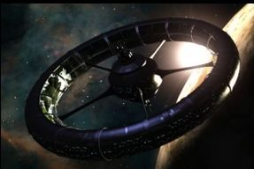

Nestled in a calm section of neutral space and positioned in orbit above Epsilon III, Toshan Station is perfectly situated to assist any and all travelers passing through nearby galactic trade corridors. We have a fully functional cargo depot and complete refueling/restocking facilities available.
Stop on by. And don't forget to say hello to our new station administrator.
